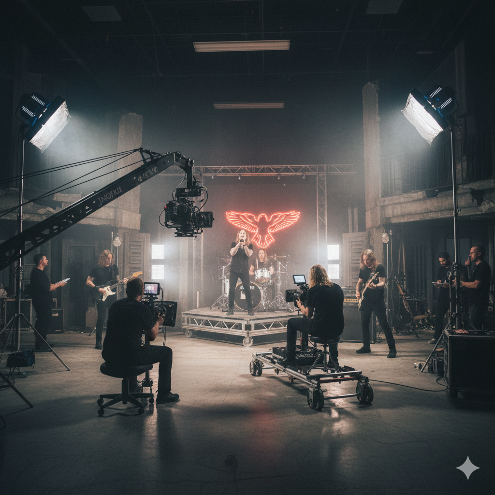
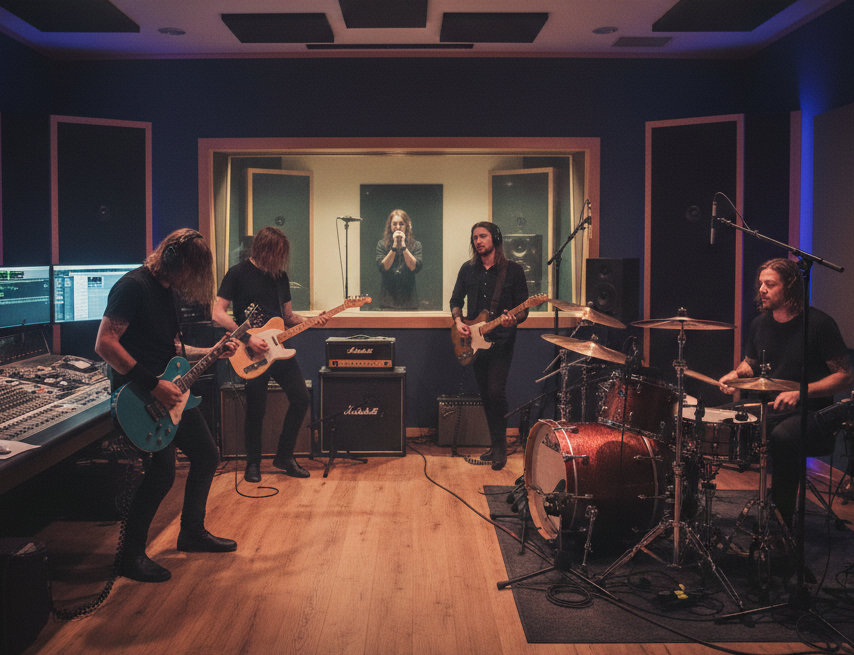
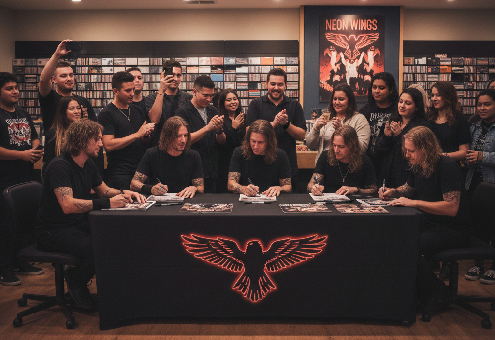
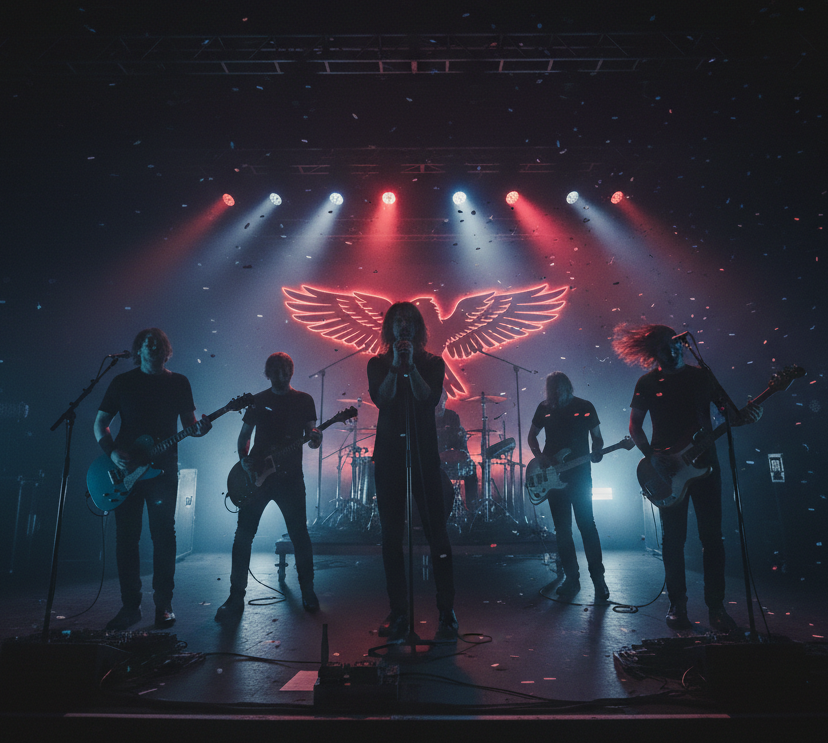

KAFES, şehir hayatının sıkışmışlığını, gençliğin içsel karmaşasını ve “bir yere ait olamama” hissini şarkılarına taşıyan bağımsız bir alternatif rock grubudur. Grup, 2022 yılında İstanbul’da bir araya gelen dört arkadaş tarafından kurulmuştur. Başlangıçta sadece birlikte müzik yapmak ve haftanın yorgunluğunu atmak için yapılan provalar, kısa sürede ortak bir üretim alanına dönüşmüş; bu üretim alanı zamanla KAFES’in kimliğini oluşturmuştur.
Grubun ismi olan “KAFES”, modern hayatın insanı içine hapsettiği görünmez sınırları temsil eder. Kalabalıklar içinde yalnız kalma, sürekli bir yerlere yetişmeye çalışma ve duyguları bastırma hâli, grubun şarkı sözlerinde sıkça karşılaşılan temalardandır. KAFES, bu duyguları dramatize etmek yerine sade ve samimi bir dille anlatmayı tercih eder. Şarkılarında dinleyicinin kendinden bir parça bulabilmesi, grubun en önem verdiği konulardan biridir.
Müzikal olarak KAFES; alternatif rock, indie ve zaman zaman lo-fi dokunuşlardan beslenir. Yumuşak gitar melodileri, yer yer sertleşen ritimler ve minimal altyapılar grubun karakteristik sound’unu oluşturur. KAFES için müzik, “kusursuz olmak”tan çok “gerçek olmak” anlamına gelir. Bu yüzden kayıt süreçlerinde de stüdyo pürüzlerinden çok, şarkının hissettirdiği duyguya odaklanılır. Dinleyiciye steril bir ürün değil, yaşanmış bir an sunmak amaçlanır.
Grup üyeleri, farklı müzik zevklerine sahip olmalarına rağmen ortak bir ruh hâlinde buluşur. Kimi zaman karanlık ve melankolik, kimi zaman da ironik ve hafif alaycı bir anlatım dili benimserler. Bu çeşitlilik, KAFES’in müziğini tek bir duyguya sıkışmaktan kurtarır. Konser performanslarında ise stüdyo kayıtlarından daha ham, daha enerjik bir atmosfer yakalanır. Sahne, KAFES için sadece şarkı çalınan bir yer değil; dinleyiciyle aynı duyguda buluşulan bir alan olarak görülür.
2024 yılında yayımlanan ve İstanbul’da kaydedilen “X” isimli single, grubun daha geniş bir kitle tarafından tanınmasını sağlamıştır. Şarkı, şehirde kaybolmuşluk hissi ve içsel sıkışmışlık temaları etrafında şekillenirken, aynı zamanda dinleyiciye “yalnız değilsin” duygusunu hissettirmeyi amaçlar. “X”, tüm dijital platformlarda yayınlanarak grubun dijital dünyadaki varlığını da güçlendirmiştir.
KAFES, kendini büyük iddialarla tanımlayan bir grup olmayı tercih etmez. Onlar için önemli olan, üretmeye devam etmek, samimi kalmak ve şarkılarını dinleyen insanlarla gerçek bir bağ kurabilmektir. Kimi zaman bir kulaklıkta, kimi zaman küçük bir sahnede, kimi zaman da kalabalık bir konser alanında… KAFES’in hikâyesi, dinleyen herkesle birlikte yeniden yazılmaya devam etmektedir.